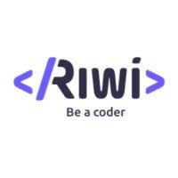

Daniel Torres Monsalve
PERFIL PROFESIONAL
Soy un desarrollador web full stack con una sólida trayectoria de 10 años en la creación de soluciones web innovadoras y eficientes. Mi experiencia abarca tanto el desarrollo front-end como el back-end, y me enorgullezco de mi capacidad para entregar productos de alta calidad, cumpliendo con los plazos establecidos. Mi pasión por la tecnología y el compromiso con la mejora continua me han permitido mantenerme actualizado en las últimas tendencias y tecnologías web.
|

|
|
Experiencia laboral
Julio 2019 – Actual
Consultoria I Serveis Informàtics S.C.P. – Barcelona
Técnico informático
Dirigió al equipo de soporte proporcionando asistencia a un promedio de 250 usuarios globalmente las 24 horas del día y 7 días a la semana.
Capacidad para crear documentación que permita a la comunidad de usuarios mejorar sus habilidades.
Monitorizó el funcionamiento de los sistemas y comandos de entrada para resolver problemas.
|
CONTACTO
Avenida la playa
Medellin_Colombia
697694239
Daniel.torres@outlook.com
|
Noviembre 2015 – Diciembre 2018
Experis IT –
Técnico informático
El Prat de Llobregat
Reporte de errores y fallos en las nuevas versiones de software e implementación de correcciones.
Nivel excepcional de servicio a cada cliente escuchando sus preocupaciones y respondiendo a sus preguntas.
Capacidad para solucionar problemas operativos con los usuarios a través del teléfono o correo electrónico.
|
APTITUDES
Diagnóstico de software
Apoyo informático
Dominio de TCP/IP y WAN
Análisis técnico de problemas
Formación a los empleados
Atención al cliente
|
Octubre 2011 – Enero 2015
Vinzeo Technologies – Barcelona
Técnico informático
Retuvo clientes existentes a través de una mejora en la calidad y un servicio de soporte eficiente.
Capacidad para cargar un nuevo software, realizar actualizaciones y poner parches a servidores frente a amenazas maliciosas.
Mantenimiento de los sistemas cada hora para garantizar el pleno funcionamiento de las redes durante horas puntas.
|
IDIOMAS
Español, Catalán
Idioma nativo
Inglés
B2 – Intermedio avanzado
|
Formación académica
Septiembre 2011
Universitat Oberta de Catalunya (Barcelona)
Grado en Ingeniería Técnica de Informática
|
SOFTWARE
SAP
HTML
Javascript
SQL
iOS/Android
|